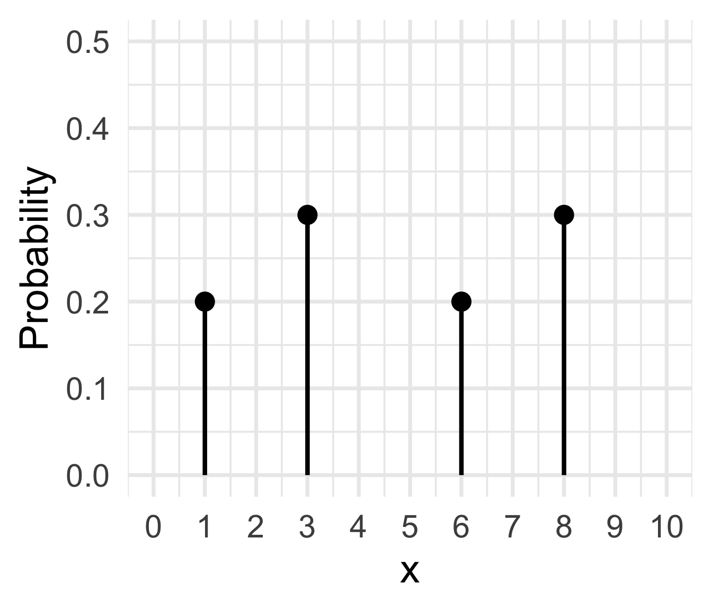

Lesson 8: Probability density functions (PDFs)
2026-10-21
Where are we?

Discrete vs. Continuous RVs
For a discrete RV, the set of possible values is either finite or can be put into a countably infinite list.
Continuous RVs take on values from continuous intervals, or unions of continuous intervals

How to define probabilities for continuous RVs?
Discrete RV \(X\):
- pmf: \(p_X(x) = P(X=x)\)
Continuous RV \(X\):

- density: \(f_X(x)\)
- probability: \(P(a \leq X \leq b) = \int_a^b f_X(x)dx\)
Example 1.2
Let \(f_X(x)= 2\), for \(2.5 \leq x \leq 3\).
- Find \(\mathbb{P}(2.7 \leq X \leq 2.9)\).

Example 1.4
Let \(f_X(x)= 2\), for \(2.5 \leq x \leq 3\).
- Find \(\mathbb{P}(X = 2.9)\).

Example 1.5
Let \(f_X(x)= 2\), for \(2.5 \leq x \leq 3\).
- Find \(\mathbb{P}(X \leq 2.8)\).